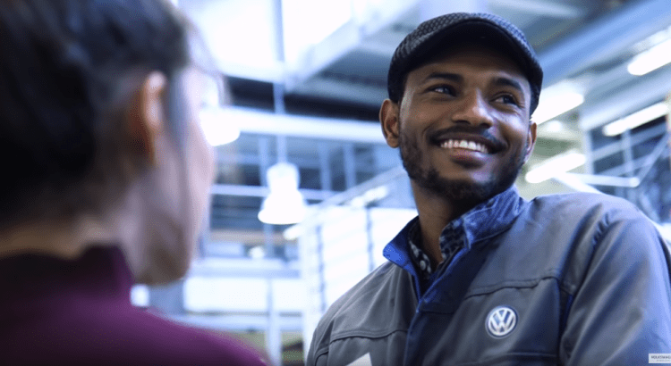
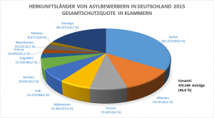

Volkswagen Pushes Seven-Figure Sum to Integrate Refugees
Chief financial officer of the German automobile group Volkswagen, Frank Witter, called on the economic and labor circles not to be complacent in the process of integrating refugees.'We have a lot of people fleeing their homeland, and the integration process is long,' Witter, who is sponsoring refugee assistance projects in Volkswagen, said.'The situation today is calm.There are still a large number of people fleeing their countries all over the world, and it would be naive to think that this will not happen again.
Refugees in Germany have made their way towards integration and success.It is worth noting that since the peak of the refugee influx into the country in the fall of 2015, Germany’s largest industrial group developed a program that introduces refugees to work paths and provides them with basic qualifications that help them integrate into the labor market.
Witter said that the Volkswagen group set aside an annual amount of €1 million for community initiatives, education, and professional integration, adding that there is more than just funding.According to Witter’s data, some of the participants do not complete this program, but in many cases, participants succeed in obtaining vocational training with Volkswagen or other owned companies that engage in local partnerships such as Deutsche Telekom and Bosch.
Daniel Terzenbach, head of the Federal Employment Agency, sees a clear difference between the recruitment of skilled workers and the recruitment of refugees.According to his opinion, 'one of them relates to the employment of trained technical personnel with experience, and the other is the employment of those who came because of human migration.'
A number of small and medium-sized companies have long been searching for qualified trainees and manpower, especially in rural areas where a number of job and rehabilitation opportunities remain vacant.However, many doubt whether the refugees filled those jobs and training opportunities available in the country.Last year alone, the number of refugees who entered Germany last year exceeded over a million people.After three months, they are entitled to work in Germany, regardless of the type of residence permit.
Many refugees do not have sufficient qualifications and do not speak German at all.It is believed that integration into the labor market will require at least five to ten years of working time.Bettina Shamouda, commercial director of a car repair company in Baden-Wurttemberg, does not want to hide that 'it was very difficult in the beginning.'Her company has been working for two years to train refugees from Iraq.
Shamouda said that the integration of many refugees who entered Germany in the labor market 'would not be easy, because the level of refugee training is relatively weak.'For this reason, we find that many companies are betting first on training and qualification.The German Railways Company, for example, intends to expand a program that prepares primary school graduates without a certificate to start training that also includes refugees.
[bsa_pro_ad_space id=4]
Share on Facebook Tweet Follow us
Posted On: 2020-01-20T00:00:00
Posted By: Joyce Davis


Content Date: 2020-01-20
Download Date: 2021-07-09
Document ID: L0C04E6W4